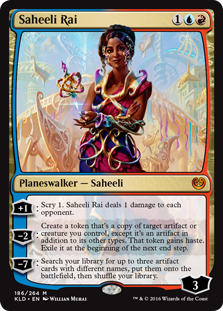
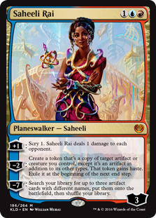

Emeria is an archtype in the Modern format based around stalling the game and using creatures with enter-the-battlefield synergy to grind out the game.
This strategy is based around the cards Emeria, the Sky Ruin, and Sun Titan to help recur creatures and provide value. Emeria decks always contain white,
but often splash more colors. A blue/white version of Emeria will usually be a tap-out control style deck. A green/white would be a much more aggressive,
ramp-based deck. Some will even go white/blue/red to play Saheeli Rai, allowing for multiple combos and countless syngeries. Bant Emeria contains white,
blue, and green. The green provides much more graveyard synergy, while the blue splash gives a bit more consistency and removal.
 
